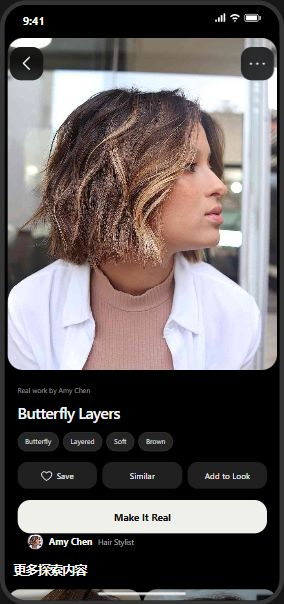
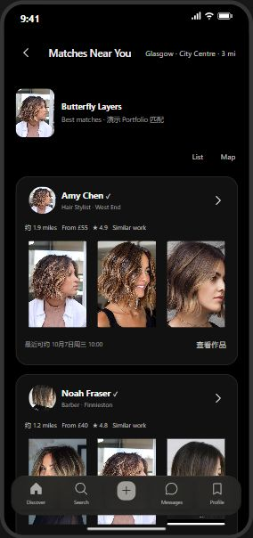
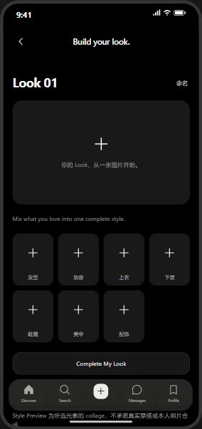
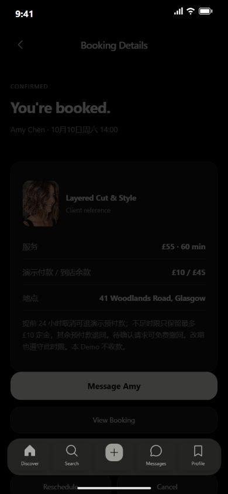

Digital Products & UX / Service & Transformation
LOOK — Beauty Marketplace
From visual inspiration to a bookable local service.
A two-sided mobile product exploring how people communicate a desired look, assess local Creators and move towards a service appointment.
Interactive prototype · field research planned- My contribution
- Product framing, experience design and AI-assisted prototyping
- Scope
- Consumer + Creator mobile journeys


01 / Context & scope
How might a saved image become a clear, realistic service request?
LOOK starts with a product hypothesis: visual inspiration and local service booking often require different kinds of information. The prototype connects the desired look with actual work, service scope, location, consultation and availability. The demand and provider workflow still need field validation.
Design objectives
- Make a visual preference easier to explain.
- Help people judge relevant local work before committing.
- Connect the request to a manageable Creator workflow.
Consumer
Collect inspiration, combine a look, compare relevant work and confirm service details.
Creator
Present actual work, clarify services, handle requests and manage availability.
Pilot operator
Define the initial local supply, onboarding and trust requirements. This role is a planning lens, not an existing operations dashboard.
02 / Information architecture
A map of the current prototype, organised by navigation, detail and action depth. Labels do not imply three separate apps. Interview findings may change this hierarchy.
Consumer navigation
- L1 · Discover / Search / Build / Messages / Profile
- L2 · Look detail / saved board / matches / Creator profile / conversations
- L3 · Add to Look / edit tags / choose service and time / booking actions
Creator navigation
- L1 · Home / Portfolio / Calendar / Messages / Profile
- L2 · Requests / work details / appointments / service settings
- L3 · Reply / confirm or decline / update availability / publish work
03 / The end-to-end journey
Discover
Browse and save a look.
Define
Inspect the detail or combine a personal board.
Compare
Filter nearby Creators and relevant portfolio work.
Consult & book
Clarify feasibility, select a service and check a time.
Follow through
Track the request; the Creator manages the same booking.
No suitable result? Adjust the area or leave a style request. A visual match is an invitation to consult, not a guarantee of the result.
04 / Interface walkthrough
Actual screens from the existing running prototype. Read the sequence here, then follow the prototype steps below. Accounts, prices and appointments shown are demo fixtures.
Images lead the browse experience. Inspiration and Creator work have distinct labels, so a reference image does not silently become a provider claim.

Save, Similar, Add to Look and Make It Real serve different intentions. Work attribution stays visible before the user moves towards a service.

Relevant work, area, indicative price and availability appear together. Similar work and Same category remain distinct; ratings and distances here are demonstration data.

A personal board separates hair, makeup, clothing and accessories. The preview is a collage; it is not an AI try-on or a promised service result.
A dedicated Creator experience organises requests, portfolio, services and calendar, rather than treating the product as a consumer gallery alone.

The simulated booking connects the chosen look, service and provider. Its state is available to the matching Creator account in the same browser.
05 / Decisions & state logic
Location before ranking
An attractive match outside the chosen area cannot solve a local service need.
- Prototype response
- Apply the distance filter before tag-based ranking; offer an editable area when location access is unavailable.
- What to validate next
- Check whether participants understand the area limit and find relevant options.
Matching is not feasibility
Similar images alone cannot establish provider capability, price or time.
- Prototype response
- Keep work attribution and match labels explicit; connect selection to consultation and confirmation.
- What to validate next
- Check whether people distinguish inspiration, provider work and a confirmed service.
Keep both sides consistent
Availability and price can change between browsing and booking.
- Prototype response
- The demo rechecks booking conditions and keeps pending requests visible. Chat, payment and identity remain simulated.
- What to validate next
- Test stale information, unavailable slots and declined requests before a real pilot.
How the prototype works
Choose the Consumer role and a preset demo name. Open a look → Make It Real → nearby Creators → service and availability. Switch to the matching Creator from Profile to inspect the same request. No real phone number or payment is needed.
Local review only. This prototype is not a live commercial service.
The interactive preview is available in the local review environment when its demo service is running. Screenshots remain available here.
06 / Research & field testing
Planned fieldwork · no findings claimed yet
The next phase connects the prototype to real people and settings. The following is a research plan, not a report of completed activities.
Explore the real journey
Ask consumers how they collect references, explain a look and decide whom to trust. Capture consented journey notes and anonymised examples.
Observe provider work
Discuss consultation, feasible requests, pricing and diary management with local providers. Record actual constraints before narrowing the pilot.
Test one complete task
Ask a participant to turn a chosen look into a suitable service request. Record completion, hesitation, misunderstood labels and recovery from no matches.
Field evidence & iteration log
Awaiting first field visit. Site photos, anonymised interview findings and test-to-iteration comparisons will be added here when available.
Site photographs & observation
Add consented photos with date, setting and the workflow observed.
To be addedInterview findings
Add anonymised notes, participant context and the insight supported.
To be addedTesting & iteration
Connect a task and observed issue to a design change and a retest.
To be added07 / Progress & release plan
Creator identities, reviews, distances, payments and messages are simulated. Matching uses tags and rules; style preview is a collage. Browser storage does not provide production authentication or cross-device sync. A separate, narrower V1 includes persistent APIs and an iOS source project, but is not a launched product.
- Now · connected whole-product mobile demo
- Next · interviews, observation and task-based testing
- Then · refine a limited local provider pilot
- Before release · real identity, provider onboarding, privacy, payments and notifications
Local implementation checks do not establish usability or business impact. Release and a real pilot require further validation and explicit approval.
Download case PDF ↓